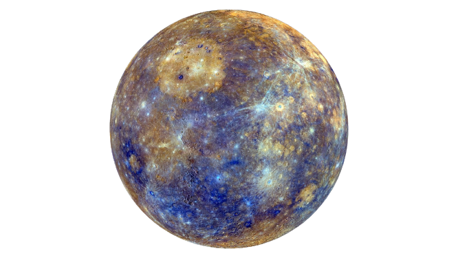
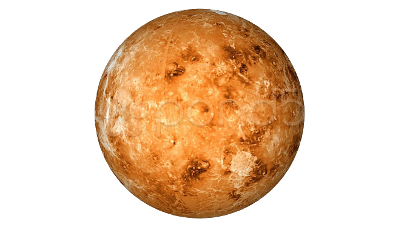
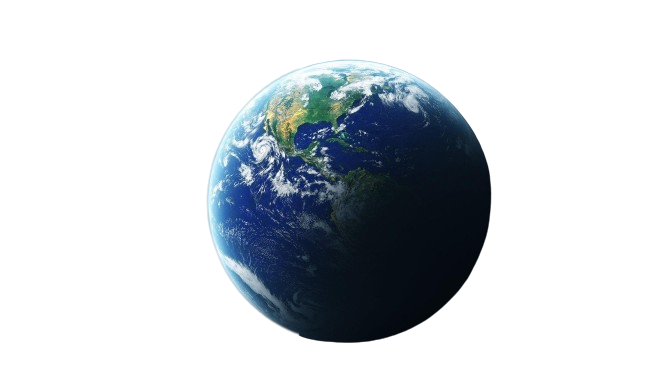
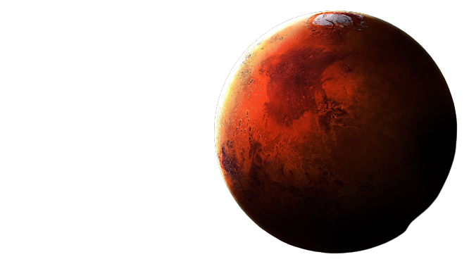
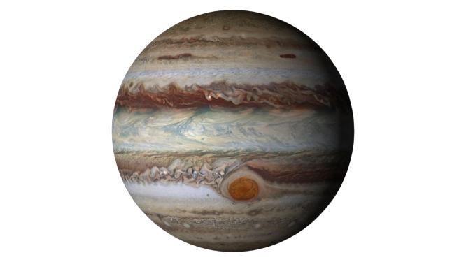
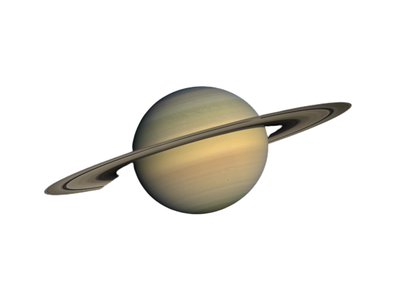
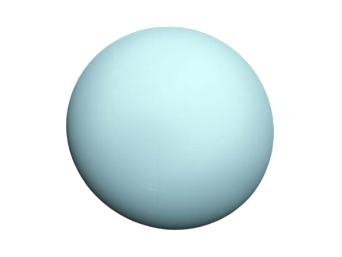
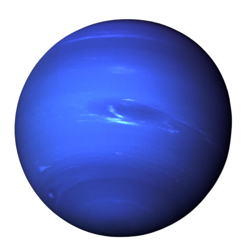

The Mercury
Mercury, the closest planet to the Sun, is a rocky
and barren world with extreme temperatures.
It lacks an atmosphere, resulting in scorching hot
days and freezing cold nights.

Radius: 2439.7 KM
Number of Moons: 0
Type: Terrestrial
Distance from Sun: 53,782,000 km
Age: 4.503 billion (years)
Some Facts about Mercury:-
1. Mercury has the greatest temperature variations in our solar system, with scorching hot daytime temperatures and freezing cold nights.
2. Despite being the closest planet to the Sun, Mercury is not the hottest planet. Venus holds that title due to its thick atmosphere.
3. Mercury has a very slow rotation, taking about 59 Earth days to complete one rotation on its axis.
4. It has a relatively thin atmosphere consisting mostly of trace amounts of helium and hydrogen.
5. Mercury is known for its long, meandering cliffs called "scarps," which are believed to be the result of the planet's cooling and shrinking over time.
The Venus
Venus, Earth's "sister planet," is the second planet
from the Sun with a thick carbon dioxide atmosphere,
causing extreme temperatures and a dense cloud cover.

Radius: 6051.8 KM
Number of Moons: 0
Type: Terrestrial
Distance from Sun: 108,230,000 km
Age: 4.503 billion (years)
Some Facts about Venus:-
1. Venus has the longest day of any planet in our solar system, lasting longer than its year.
2. Venus' surface temperature is a scorching 864 degrees Fahrenheit (462 degrees Celsius) due to its dense atmosphere.
3. Venus is the only planet named after a female figure, the Roman goddess of love and beauty.
4. Venus appears exceptionally bright in the night sky due to its reflective sulfuric acid clouds, earning it the titles "Evening Star" and "Morning Star."
5. Venus rotates in the opposite direction, known as retrograde rotation, with the Sun rising in the west and setting in the east.
The Earth
Planet Earth is a beautiful, blue planet teeming with life, nestled in the
vastness of the cosmos.It is our home, offering diverse ecosystems and a
delicate balance that sustains all living beings.

Radius: 6378.1 KM
Number of Moons: 1
Type: Terrestrial
Distance from Sun: 151,920,000 km
Age: 4.53 billion (years)
Some Facts about Earth:-
1. Earth experiences a phenomenon called "earthquake lights," where luminous flashes or glows are observed in the sky before, during, or
after an earthquake.
2. The Earth's rotation is gradually slowing down over time due to tidal forces from the Moon, causing the length of a day to increase by
approximately 1.7 milliseconds per century.
3. Earth has a hidden continent called Zealandia, mostly submerged beneath the ocean, which includes New Zealand and New Caledonia.
4. There are more living organisms in a teaspoon of soil on Earth than there are people on the planet.
5. Earth's atmosphere extends much farther than commonly known, reaching up to 10,000 kilometers (6,200 miles) into space,
albeit becoming extremely thin.
The Mars
The fourth planet, famous for its red color and potential for life, captivates scientists with its Earth-like features and ongoing exploration.

Radius: 3389.5 KM
Number of Moons: 2
Type: Terrestrial
Distance from Sun: 250,570,000 km
Age: 4.603 billion (years)
Some Facts about Mars:-
1. Mars is home to Olympus Mons, the solar system's largest volcano.
2. Valles Marineris on Mars is the deepest and longest canyon in our solar system.
3. Mars has polar ice caps consisting of water ice and carbon dioxide.
4. Mars has a thin atmosphere, mostly composed of carbon dioxide.
5. Mars is a target for exploration, with missions studying its geology and potential for life.
The Jupiter
Jupiter, the awe-inspiring giant of our solar system, dazzles with its colossal
size,swirling storms, and a gravitational embrace that safeguards the inner
planets from cosmic threats.

Radius: 69,911 KM
Number of Moons: 80-95
Type: Gas Giant
Distance from Sun: 741,490,000 km
Age: 4.603 billion (years)
Some Facts about Jupiter:-
1. Jupiter's composition is primarily gas, consisting mainly of hydrogen and helium.
2. The planet's immense mass causes it to have the highest gravity among all the planets in the solar system.
3. Jupiter has a complex system of rings, although they are not as prominent or well-known as Saturn's.
4. The planet experiences extreme weather phenomena, including powerful storms and lightning discharges.
5. Jupiter has been visited by several spacecraft, including the Galileo probe, which provided valuable data
about the planet's atmosphere, moons, and magnetic field.
The Saturn
Saturn: Spectacular rings, a celestial jewel adorned with countless icy particles, captivating the gaze of sky watchers.

Radius: 58,232 KM
Number of Moons: 83
Type: Gas Giant
Distance from Sun: 1,463,300,000 km
Age: 4.503 billion (years)
Some Facts about Saturn:-
1. Saturn, the second largest planet, is renowned for its breathtaking and extensive ring system composed of ice particles.
2. The planet's mesmerizing rings are not solid but are made up of countless individual ringlets that orbit around Saturn.
3. Saturn has more than 80 moons, with the largest one, Titan, being larger than the planet Mercury.
4. The distinctive golden hue of Saturn's atmosphere is the result of its upper layers containing ammonia crystals.
5. Saturn's density is so low that if there were an enormous bathtub, the planet would float in it.
The Uranus
Uranus: Eccentric planet with a tilted axis, icy-blue atmosphere,
mysterious rings, and intriguing moons, inviting us to unravel its
secrets.

Radius: 25,362 KM
Number of Moons: 27
Type: Ice Giant
Distance from Sun: 2,937,800,000 km
Age: 4.503 billion (years)
Some Facts about Uranus:-
1. Uranus is the only planet in our solar system that rotates on its side, with an axial tilt of about 98 degrees.
2. It has a pale blue-green color due to the presence of methane gas in its atmosphere, which absorbs red light.
3. Uranus has a peculiar ring system, but it is not as prominent or well-known as Saturn's.
4. The planet experiences extremely long seasons, with each season lasting about 21 Earth years due to its tilted axis.
5. Uranus has a set of 27 known moons, with the largest ones named after characters from the works of William Shakespeare and
Alexander Pope.
The Neptune
Neptune, the mysterious blue giant, lies farthest from the Sun. Its turbulent
atmosphere, icy winds, and enigmatic dark spots beguile astronomers, awaiting
further exploration.

Radius: 24,622 KM
Number of Moons: 14
Type: Ice Giant
Distance from Sun: 4,473,100,000 km
Age: 4.503 billion (years)
Some Facts about Neptune:-
1. Neptune is the eighth and farthest planet from the Sun, shrouded in deep blue due to methane in its atmosphere.
2. It possesses the strongest winds in the solar system, reaching speeds of over 1,200 miles per hour (2,000 kilometers per hour).
3. Neptune has a remarkable feature called the Great Dark Spot, similar to Jupiter's Great Red Spot but eventually disappeared.
4. The planet's largest moon, Triton, orbits in a retrograde direction, suggesting a captured object from the Kuiper Belt.
5. Neptune radiates more energy than it receives from the Sun, indicating an internal heat source and complex atmospheric processes.